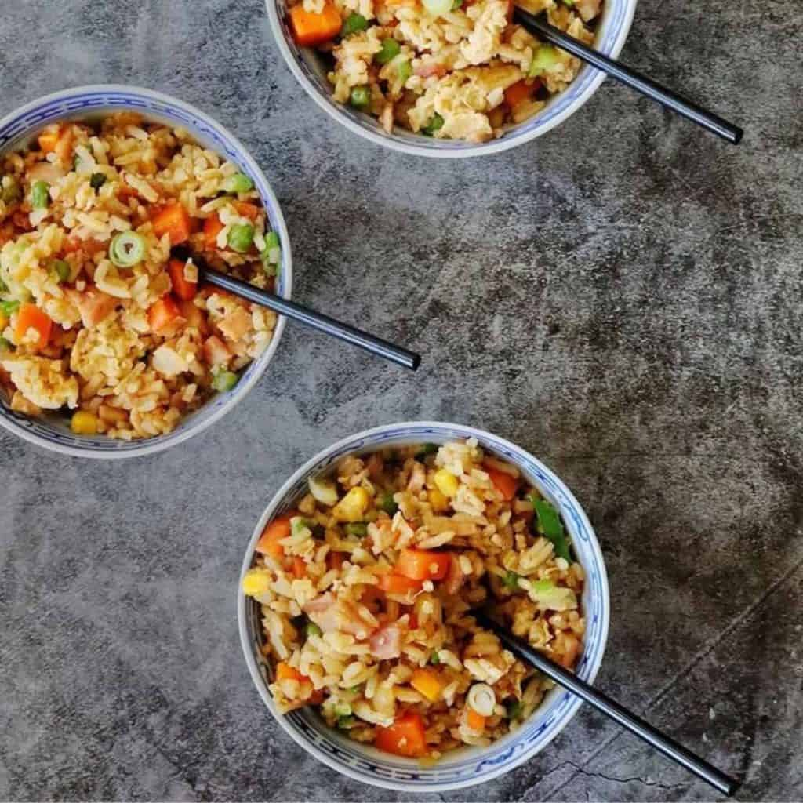
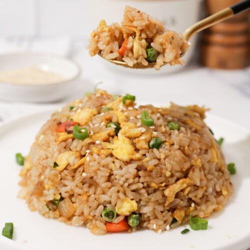

Spam Fried Rice

The Best Spam Fried Rice!
Comfort food at it's finest.This easy fried rice is loaded with vegetables and one secret ingredient. SPAM!
Quick tip! Cold rice and a wok are essential for optimal results!
Ingredients
- 3 tablespoon vegetable oil
- 1 cup cold medium to long grain rice (make the day before and refrigerate for 24 hours)
- 3 cloves garlic
- 1 pc spring onion (scallion)
- ½ pc shallot
- 1 egg
- 100g spam
- 200g vegetables
- 1½ teaspoon soy sauce
- 1 teaspoon sesame oil
- msg to taste
Instructions
- Chop the vegetables and the spring onion. Next, chop the garlic and shallot finely and grate the ginger. Finally, chop all the meat.
- Add some of the vegetable oil to a wok on high heat. Once the oil is smoking, add the egg to the wok and fry. Once the egg is slightly set, scramble it by beating it with a spatula. Then push it aside.
- Add more oil. Once it is smoking, add the rice. Separate it with the spatula to ensure that each grain is evenly fried.
- After around 2 minutes, add the spam and stir until well mixed. Continue to stir fry for 2 minutes or longer if the spam is not cooked beforehand. Then add some of the vegetables and stir fry for 30 seconds. Add more and more of the vegetables in stages like this until all of them have been added.
- Add the scallion and stir well, reserving half for garnish after serving. Add light soy sauce and msg at this stage.
- Take off the heat and let cool slightly. Now add sesame oil and stir until well mixed into the rice. Finally, garnish with the reserved scallion. Enjoy your spam fried rice!

Enjoy!